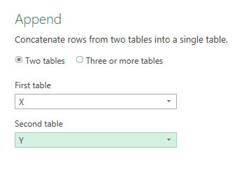
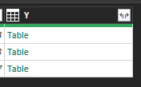

Joins 1: introduction
How to think about joins?
A join is a way of merging two datasets. Let’s demonstrate with some simple data:
library(tibble)
library(dplyr)x <- tibble(
name = c("Steve", "Emma", "Arti"),
tool = c("R", "Excel", "Excel"),
training_sessions = c(4,3,7)
)| name | tool | training_sessions |
|---|---|---|
| Steve | R | 4 |
| Emma | Excel | 3 |
| Arti | Excel | 7 |
y <- tibble(
name = c("Abena", "Yuika", "Arti"),
tool = c("R", "Excel", "Power BI"),
training_sessions = c(3,5,3)
)| name | tool | training_sessions |
|---|---|---|
| Abena | R | 3 |
| Yuika | Excel | 5 |
| Arti | Power BI | 3 |
Binding
The simplest join we could do is to bind the rows from one set onto another:
x |>
bind_rows(y) |>
knitr::kable()| name | tool | training_sessions |
|---|---|---|
| Steve | R | 4 |
| Emma | Excel | 3 |
| Arti | Excel | 7 |
| Abena | R | 3 |
| Yuika | Excel | 5 |
| Arti | Power BI | 3 |
That just brings all the rows from y onto the end of x. We could also have just bound the columns together:
x |>
bind_cols(y) |>
knitr::kable()| name…1 | tool…2 | training_sessions…3 | name…4 | tool…5 | training_sessions…6 |
|---|---|---|---|---|---|
| Steve | R | 4 | Abena | R | 3 |
| Emma | Excel | 3 | Yuika | Excel | 5 |
| Arti | Excel | 7 | Arti | Power BI | 3 |
Doing this in R, we end up with something quite messy: we’ve gained some new columns (with odd names), and lots of blank values. The reason for this is that Arti has a row in each dataset. Anyone without corresponding rows gets filling in with blanks.
We could do something very similar by hand in Excel. It’s worth noting the VSTACK function, which allows you to bring one table into another in Excel. PowerQuery has some great tools for binding data. Append Queries allows you to perform row-binding:

However we bind, the main distinction remains the same. When you bind, the values in your data are irrelevant. Column names will matter - e.g. row binding works when you have identically named columns. But the values themselves don’t matter at all.
Joins proper
Unlike binding, though, a join will pay attention to the values found in our data. For example, we could do a left-join:

This would retain any data from our x dataset, but also bring in any matching data from y.So let’s now left-join y onto x using the name column:
x |>
left_join(y, by = "name") |>
knitr::kable()| name | tool.x | training_sessions.x | tool.y | training_sessions.y |
|---|---|---|---|---|
| Steve | R | 4 | NA | NA |
| Emma | Excel | 3 | NA | NA |
| Arti | Excel | 7 | Power BI | 3 |
We’d get entirely different results if we joined on the tool column:
x |>
left_join(y, by = "tool") |>
knitr::kable()| name.x | tool | training_sessions.x | name.y | training_sessions.y |
|---|---|---|---|---|
| Steve | R | 4 | Abena | 3 |
| Emma | Excel | 3 | Yuika | 5 |
| Arti | Excel | 7 | Yuika | 5 |
We could do something similar, again using the name column, to add in some dis-similar data from another source:
z <- tibble(
name = c("Abena", "Yuika", "Arti", "Steve", "Emma", "Bruce"),
score = c(90, 85, 80, 75, 70, 33)
)
x |>
left_join(z, by = "name") |>
knitr::kable()| name | tool | training_sessions | score |
|---|---|---|---|
| Steve | R | 4 | 75 |
| Emma | Excel | 3 | 70 |
| Arti | Excel | 7 | 80 |
There are several ways of doing this from R. If you’re not a dplyr fan, you could use base-R’s merge to do a left join:
merge(x, y, by = "name") |>
knitr::kable()| name | tool.x | training_sessions.x | tool.y | training_sessions.y |
|---|---|---|---|---|
| Arti | Excel | 7 | Power BI | 3 |
You should see that only the values from y’s score column that have a corresponding name in x get populated, and everything else gets filled with NAs. Here’s a nice introduction to the different kinds of join you can do in dplyr.
Again, we can do something similar in PowerQuery - note that joins are called Merges

Anti-join
An anti-join takes a dataset, and removes any matching values from the second dataset:

x |>
anti_join(y, by = "name") |>
knitr::kable()| name | tool | training_sessions |
|---|---|---|
| Steve | R | 4 |
| Emma | Excel | 3 |
Final thoughts
- some nice discussion about using
dplyr::semi_jointo find similar rows of data without actually binding columns - using the pointblank package for data validation